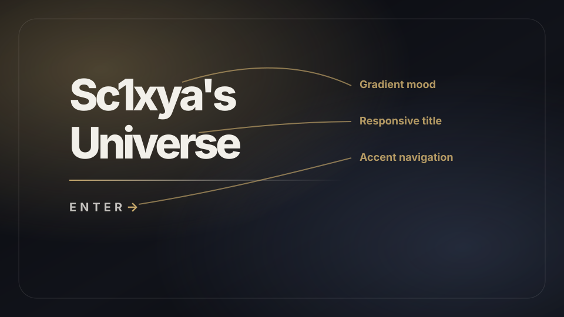
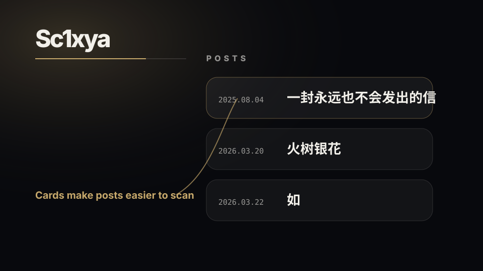
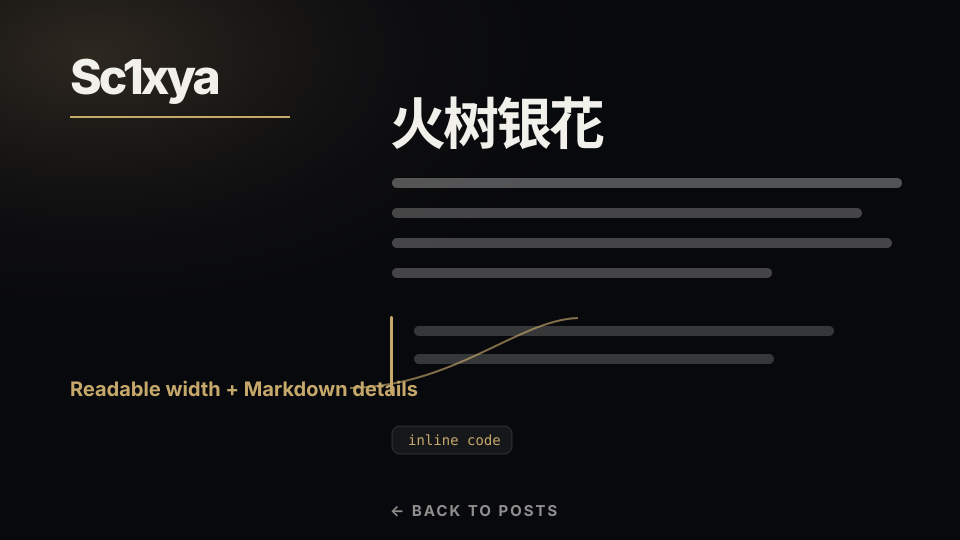

01 / 首页
让第一屏更像入口
使用渐变光晕、细边框和金色强调线，保留暗色宇宙感，同时让标题与进入链接更醒目。
Visual Notes
这页用三张示意图说明本次优化的重点：更有层次的首页、更清晰的文章列表，以及更舒适的正文阅读体验。

01 / 首页
使用渐变光晕、细边框和金色强调线，保留暗色宇宙感，同时让标题与进入链接更醒目。

02 / 列表
文章列表改成语义化列表和卡片布局，日期与标题分栏展示，并通过 hover 状态提示可点击区域。

03 / 阅读
正文页控制行宽和行高，并补充 Markdown 标题、引用、链接与行内代码样式，提升阅读节奏。